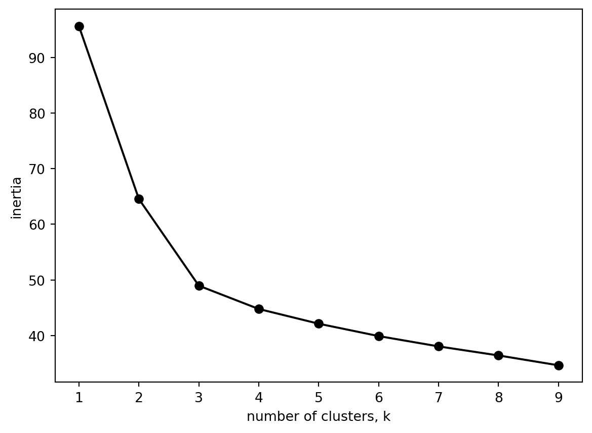
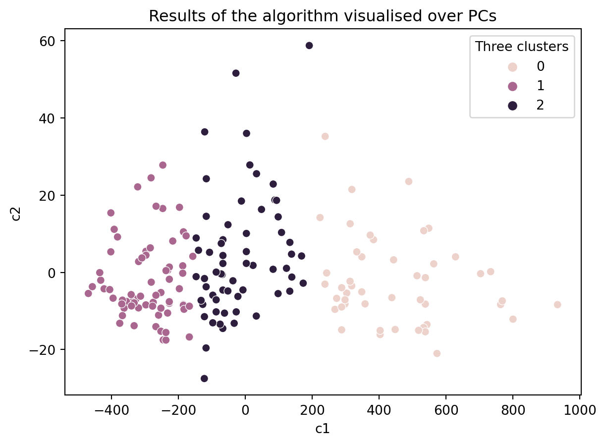
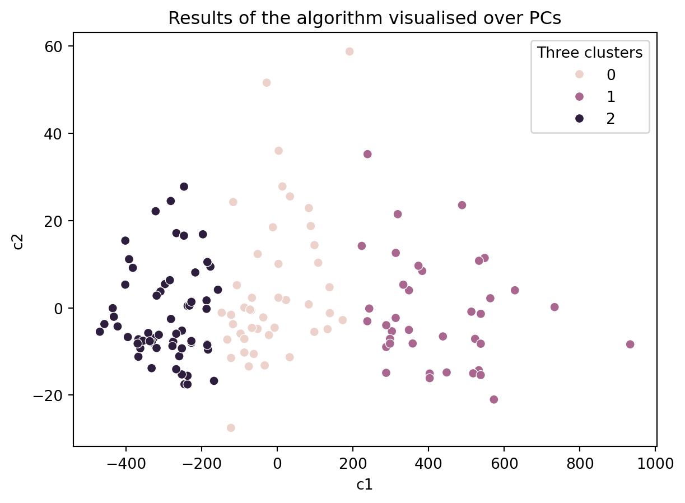
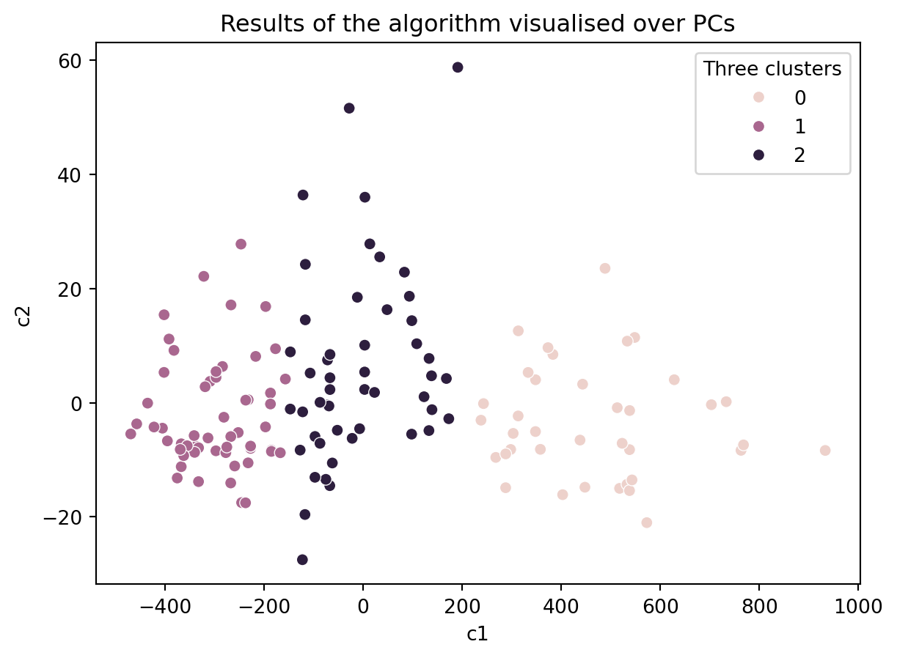

import pandas as pd
df = pd.read_csv('data/wine.csv')21 Lab: Clustering and Ground Truth
We are going to use the Wine Quality Dataset from Cortez et al. (2009) that you may be familiar with by now (but if you don’t, tou can find more information about it here: https://doi.org/10.24432/C56S3T).
21.1 Data Wrangling
Look at our data.
df.head()| Class label | Alcohol | Malic acid | Ash | Alcalinity of ash | Magnesium | Total phenols | Flavanoids | Nonflavanoid phenols | Proanthocyanins | Color intensity | Hue | OD280/OD315 of diluted wines | Proline | |
|---|---|---|---|---|---|---|---|---|---|---|---|---|---|---|
| 0 | 1 | 14.23 | 1.71 | 2.43 | 15.6 | 127 | 2.80 | 3.06 | 0.28 | 2.29 | 5.64 | 1.04 | 3.92 | 1065 |
| 1 | 1 | 13.20 | 1.78 | 2.14 | 11.2 | 100 | 2.65 | 2.76 | 0.26 | 1.28 | 4.38 | 1.05 | 3.40 | 1050 |
| 2 | 1 | 13.16 | 2.36 | 2.67 | 18.6 | 101 | 2.80 | 3.24 | 0.30 | 2.81 | 5.68 | 1.03 | 3.17 | 1185 |
| 3 | 1 | 14.37 | 1.95 | 2.50 | 16.8 | 113 | 3.85 | 3.49 | 0.24 | 2.18 | 7.80 | 0.86 | 3.45 | 1480 |
| 4 | 1 | 13.24 | 2.59 | 2.87 | 21.0 | 118 | 2.80 | 2.69 | 0.39 | 1.82 | 4.32 | 1.04 | 2.93 | 735 |
There is a column called Class label that gives us the ground truth. The wines come from three different cultivars. Knowing the actual grouping helps us to identify how well our methods can capture this ground truth.
Following our process above, we should first get a sense of our data.
df.describe()| Class label | Alcohol | Malic acid | Ash | Alcalinity of ash | Magnesium | Total phenols | Flavanoids | Nonflavanoid phenols | Proanthocyanins | Color intensity | Hue | OD280/OD315 of diluted wines | Proline | |
|---|---|---|---|---|---|---|---|---|---|---|---|---|---|---|
| count | 178.000000 | 178.000000 | 178.000000 | 178.000000 | 178.000000 | 178.000000 | 178.000000 | 178.000000 | 178.000000 | 178.000000 | 178.000000 | 178.000000 | 178.000000 | 178.000000 |
| mean | 1.938202 | 13.000618 | 2.336348 | 2.366517 | 19.494944 | 99.741573 | 2.295112 | 2.029270 | 0.361854 | 1.590899 | 5.058090 | 0.957449 | 2.611685 | 746.893258 |
| std | 0.775035 | 0.811827 | 1.117146 | 0.274344 | 3.339564 | 14.282484 | 0.625851 | 0.998859 | 0.124453 | 0.572359 | 2.318286 | 0.228572 | 0.709990 | 314.907474 |
| min | 1.000000 | 11.030000 | 0.740000 | 1.360000 | 10.600000 | 70.000000 | 0.980000 | 0.340000 | 0.130000 | 0.410000 | 1.280000 | 0.480000 | 1.270000 | 278.000000 |
| 25% | 1.000000 | 12.362500 | 1.602500 | 2.210000 | 17.200000 | 88.000000 | 1.742500 | 1.205000 | 0.270000 | 1.250000 | 3.220000 | 0.782500 | 1.937500 | 500.500000 |
| 50% | 2.000000 | 13.050000 | 1.865000 | 2.360000 | 19.500000 | 98.000000 | 2.355000 | 2.135000 | 0.340000 | 1.555000 | 4.690000 | 0.965000 | 2.780000 | 673.500000 |
| 75% | 3.000000 | 13.677500 | 3.082500 | 2.557500 | 21.500000 | 107.000000 | 2.800000 | 2.875000 | 0.437500 | 1.950000 | 6.200000 | 1.120000 | 3.170000 | 985.000000 |
| max | 3.000000 | 14.830000 | 5.800000 | 3.230000 | 30.000000 | 162.000000 | 3.880000 | 5.080000 | 0.660000 | 3.580000 | 13.000000 | 1.710000 | 4.000000 | 1680.000000 |
No missing data. The scales of our features vary (e.g., Magnesium is in the 100s whereas Hue is in the low single digits).
How about our feature distributions?
df_long = df.melt(id_vars='Class label')import seaborn as sns
sns.violinplot(data = df_long, x = 'variable', y = 'value')<Axes: xlabel='variable', ylabel='value'>
Makes sense to normalise our data.
from sklearn.preprocessing import MinMaxScaler
# create a scaler object
scaler = MinMaxScaler()
# fit and transform the data
df_norm = pd.DataFrame(scaler.fit_transform(df), columns = df.columns)
df_long = df_norm.melt(id_vars='Class label')
df_long| Class label | variable | value | |
|---|---|---|---|
| 0 | 0.0 | Alcohol | 0.842105 |
| 1 | 0.0 | Alcohol | 0.571053 |
| 2 | 0.0 | Alcohol | 0.560526 |
| 3 | 0.0 | Alcohol | 0.878947 |
| 4 | 0.0 | Alcohol | 0.581579 |
| ... | ... | ... | ... |
| 2309 | 1.0 | Proline | 0.329529 |
| 2310 | 1.0 | Proline | 0.336662 |
| 2311 | 1.0 | Proline | 0.397290 |
| 2312 | 1.0 | Proline | 0.400856 |
| 2313 | 1.0 | Proline | 0.201141 |
2314 rows × 3 columns
#create seaborn violin plot
my_plot = sns.violinplot(data = df_long, x = 'variable', y = 'value')
#rotate x-axis labels
my_plot.set_xticklabels(my_plot.get_xticklabels(), rotation=90)[Text(0, 0, 'Alcohol'),
Text(1, 0, 'Malic acid'),
Text(2, 0, 'Ash'),
Text(3, 0, 'Alcalinity of ash'),
Text(4, 0, 'Magnesium'),
Text(5, 0, 'Total phenols'),
Text(6, 0, 'Flavanoids'),
Text(7, 0, 'Nonflavanoid phenols'),
Text(8, 0, 'Proanthocyanins'),
Text(9, 0, 'Color intensity'),
Text(10, 0, 'Hue'),
Text(11, 0, 'OD280/OD315 of diluted wines'),
Text(12, 0, 'Proline ')]
Are there any patterns?
How about a pairplot?
sns.pairplot(data = df_norm.iloc[:,1:])
Hmm, a few interesting correlations. Some of our variables are skewed. We could apply some PCA here to look at fewer dimension or even log transform some of the skewed variables.
21.2 Cluster analysis
For now we will just run a kmeans cluster and then check our results against the ground truth.
21.2.1 Determining the number of clusters
Lets decide how many clusters we need.
from sklearn.cluster import KMeans
ks = range(1, 10)
inertias = []
for k in ks:
# Create a KMeans instance with k clusters: model
model = KMeans(n_clusters=k, n_init = 10)
# Fit model to samples
model.fit(df.iloc[:,1:])
# Append the inertia to the list of inertias
inertias.append(model.inertia_)
import matplotlib.pyplot as plt
plt.plot(ks, inertias, '-o', color='black')
plt.xlabel('number of clusters, k')
plt.ylabel('inertia')
plt.xticks(ks)
plt.show()
What happens if we use the normalised data instead?
from sklearn.cluster import KMeans
ks = range(1, 10)
inertias = []
for k in ks:
# Create a KMeans instance with k clusters: model
model = KMeans(n_clusters=k, n_init = 10)
# Fit model to samples
model.fit(df_norm.iloc[:,1:])
# Append the inertia to the list of inertias
inertias.append(model.inertia_)
import matplotlib.pyplot as plt
plt.plot(ks, inertias, '-o', color='black')
plt.xlabel('number of clusters, k')
plt.ylabel('inertia')
plt.xticks(ks)
plt.show()
Pause for thought
Both of the graphs are the same. Is that what you would expect?
Three clusters seems about right (and matches our number of origonal labels).
df['Class label'].value_counts()Class label
2 71
1 59
3 48
Name: count, dtype: int6421.2.2 Computing the clusters
# Create a KMeans instance with k clusters: model
k_means = KMeans(n_clusters=3)
# Fit model to samples
df_k_means = k_means.fit(df.iloc[:,1:])
df['Three clusters'] = pd.Series(df_k_means.predict(df.iloc[:,1:].values), index = df.index)
df| Class label | Alcohol | Malic acid | Ash | Alcalinity of ash | Magnesium | Total phenols | Flavanoids | Nonflavanoid phenols | Proanthocyanins | Color intensity | Hue | OD280/OD315 of diluted wines | Proline | Three clusters | |
|---|---|---|---|---|---|---|---|---|---|---|---|---|---|---|---|
| 0 | 1 | 14.23 | 1.71 | 2.43 | 15.6 | 127 | 2.80 | 3.06 | 0.28 | 2.29 | 5.64 | 1.04 | 3.92 | 1065 | 1 |
| 1 | 1 | 13.20 | 1.78 | 2.14 | 11.2 | 100 | 2.65 | 2.76 | 0.26 | 1.28 | 4.38 | 1.05 | 3.40 | 1050 | 1 |
| 2 | 1 | 13.16 | 2.36 | 2.67 | 18.6 | 101 | 2.80 | 3.24 | 0.30 | 2.81 | 5.68 | 1.03 | 3.17 | 1185 | 1 |
| 3 | 1 | 14.37 | 1.95 | 2.50 | 16.8 | 113 | 3.85 | 3.49 | 0.24 | 2.18 | 7.80 | 0.86 | 3.45 | 1480 | 1 |
| 4 | 1 | 13.24 | 2.59 | 2.87 | 21.0 | 118 | 2.80 | 2.69 | 0.39 | 1.82 | 4.32 | 1.04 | 2.93 | 735 | 2 |
| ... | ... | ... | ... | ... | ... | ... | ... | ... | ... | ... | ... | ... | ... | ... | ... |
| 173 | 3 | 13.71 | 5.65 | 2.45 | 20.5 | 95 | 1.68 | 0.61 | 0.52 | 1.06 | 7.70 | 0.64 | 1.74 | 740 | 2 |
| 174 | 3 | 13.40 | 3.91 | 2.48 | 23.0 | 102 | 1.80 | 0.75 | 0.43 | 1.41 | 7.30 | 0.70 | 1.56 | 750 | 2 |
| 175 | 3 | 13.27 | 4.28 | 2.26 | 20.0 | 120 | 1.59 | 0.69 | 0.43 | 1.35 | 10.20 | 0.59 | 1.56 | 835 | 2 |
| 176 | 3 | 13.17 | 2.59 | 2.37 | 20.0 | 120 | 1.65 | 0.68 | 0.53 | 1.46 | 9.30 | 0.60 | 1.62 | 840 | 2 |
| 177 | 3 | 14.13 | 4.10 | 2.74 | 24.5 | 96 | 2.05 | 0.76 | 0.56 | 1.35 | 9.20 | 0.61 | 1.60 | 560 | 0 |
178 rows × 15 columns
21.3 Clusters and Ground Truth
Now that we have created three clusters, we may ask ourselves: Do our cluster labels match our ground truth? Did our cluster model capture reality?
ct = pd.crosstab(df['Three clusters'], df['Class label'])
ct| Class label | 1 | 2 | 3 |
|---|---|---|---|
| Three clusters | |||
| 0 | 0 | 50 | 19 |
| 1 | 46 | 1 | 0 |
| 2 | 13 | 20 | 29 |
It might be easier to see as a stacked plot (see this post).
import matplotlib.pyplot as plt
import numpy as np
ct.plot.bar(stacked=True)
plt.legend(title='Class label')<matplotlib.legend.Legend at 0x1798f3e50>
How has the kmeans model done compared to our ground truth?
Important
We need to be really careful here. We notice that it is not easily possible to compare the known class labels to clustering labels. The reason is that the clustering algorithm labels are just arbitrary and not assigned to any deterministic criteria. Each time you run the algorithm, you might get a different id for the labels. The reason is that the label itself doesn’t actually mean anything, what is important is the list of items that are in the same cluster and their relations.
21.3.1 Principal Components Analysis
A way to come over this ambiguity and evaluate the results is to look at a visualisations of the results and compare. But this brings in the question of what type of visualisation to use for looking at the clusters. An immediate alternative is to use scatterplots. However, it is not clear which axis to use for clustering. A common method to apply at this stage is to make use of PCA to get a 2D plane where we can project the data points and visualise them over this projection.
df.iloc[:,1:14]| Alcohol | Malic acid | Ash | Alcalinity of ash | Magnesium | Total phenols | Flavanoids | Nonflavanoid phenols | Proanthocyanins | Color intensity | Hue | OD280/OD315 of diluted wines | Proline | |
|---|---|---|---|---|---|---|---|---|---|---|---|---|---|
| 0 | 14.23 | 1.71 | 2.43 | 15.6 | 127 | 2.80 | 3.06 | 0.28 | 2.29 | 5.64 | 1.04 | 3.92 | 1065 |
| 1 | 13.20 | 1.78 | 2.14 | 11.2 | 100 | 2.65 | 2.76 | 0.26 | 1.28 | 4.38 | 1.05 | 3.40 | 1050 |
| 2 | 13.16 | 2.36 | 2.67 | 18.6 | 101 | 2.80 | 3.24 | 0.30 | 2.81 | 5.68 | 1.03 | 3.17 | 1185 |
| 3 | 14.37 | 1.95 | 2.50 | 16.8 | 113 | 3.85 | 3.49 | 0.24 | 2.18 | 7.80 | 0.86 | 3.45 | 1480 |
| 4 | 13.24 | 2.59 | 2.87 | 21.0 | 118 | 2.80 | 2.69 | 0.39 | 1.82 | 4.32 | 1.04 | 2.93 | 735 |
| ... | ... | ... | ... | ... | ... | ... | ... | ... | ... | ... | ... | ... | ... |
| 173 | 13.71 | 5.65 | 2.45 | 20.5 | 95 | 1.68 | 0.61 | 0.52 | 1.06 | 7.70 | 0.64 | 1.74 | 740 |
| 174 | 13.40 | 3.91 | 2.48 | 23.0 | 102 | 1.80 | 0.75 | 0.43 | 1.41 | 7.30 | 0.70 | 1.56 | 750 |
| 175 | 13.27 | 4.28 | 2.26 | 20.0 | 120 | 1.59 | 0.69 | 0.43 | 1.35 | 10.20 | 0.59 | 1.56 | 835 |
| 176 | 13.17 | 2.59 | 2.37 | 20.0 | 120 | 1.65 | 0.68 | 0.53 | 1.46 | 9.30 | 0.60 | 1.62 | 840 |
| 177 | 14.13 | 4.10 | 2.74 | 24.5 | 96 | 2.05 | 0.76 | 0.56 | 1.35 | 9.20 | 0.61 | 1.60 | 560 |
178 rows × 13 columns
from sklearn.decomposition import PCA
n_components = 2
pca = PCA(n_components=n_components)
df_pca = pca.fit(df.iloc[:,1:14])
df_pca_vals = df_pca.transform(df.iloc[:,1:14])Grab our projections and plot along with our cluster names.
df['c1'] = [item[0] for item in df_pca_vals]
df['c2'] = [item[1] for item in df_pca_vals]
ax = sns.scatterplot(data = df, x = 'c1', y = 'c2', hue = 'Class label')
ax.set_title('Known labels visualised over PCs')Text(0.5, 1.0, 'Known labels visualised over PCs')
In the figure above, we colored the points based on the actual labels, we observe that there has been several misclassifications in the figure above (i.e., in the algorithm’s results). So one may choose to use an alternative algorithm or devise a better distance metric.
ax = sns.scatterplot(data = df, x = 'c1', y = 'c2', hue = 'Three clusters')
ax.set_title('Results of the algorithm visualised over PCs')Text(0.5, 1.0, 'Results of the algorithm visualised over PCs')
This shows the parallelism between the clustering algorithm and PCA. By looking at the PCA loadings, we can find out what the x-axis mean and try to interpret the clusters (We leave this as an additional exercise for those interested).
How might your interpret the above plots? Did the kmeans model identify the ground truth?
How robust is our clustering? It may be that the kmeans algorithm becamse stuck or that a few outliers have biased the clustering.
Two ways to check are:
- Running the model multiple times with different initial values.
- Removing some data and running the modelling multiple times.
Run the below cell a few times. What do you see?
# Create a KMeans instance with k clusters: model
k_means = KMeans(n_clusters=3, init='random', n_init = 10)
# Fit model to samples
df_k_means = k_means.fit(df.iloc[:,1:14])
df['Three clusters'] = pd.Series(df_k_means.predict(df.iloc[:,1:14].values), index = df.index)
ax = sns.scatterplot(data = df, x = 'c1', y = 'c2', hue = 'Three clusters')
ax.set_title('Results of the algorithm visualised over PCs')Text(0.5, 1.0, 'Results of the algorithm visualised over PCs')
How about with only 80% of the data?
df_sample = df.sample(frac=0.8, replace=False)
# Create a KMeans instance with k clusters: model
k_means = KMeans(n_clusters=3, init='random', n_init = 10)
# Fit model to samples
df_k_means = k_means.fit(df_sample.iloc[:,1:14])
df_sample['Three clusters'] = pd.Series(df_k_means.predict(df_sample.iloc[:,1:14].values), index = df_sample.index)
ax = sns.scatterplot(data = df_sample, x = 'c1', y = 'c2', hue = 'Three clusters')
ax.set_title('Results of the algorithm visualised over PCs')Text(0.5, 1.0, 'Results of the algorithm visualised over PCs')
We may want to automate the process of resampling the data or rerunning the model then perhaps plotting the different inertia values or creating different plots.
Do you think our clustering algorithm is stable and provide similiar results even when some data is removed or the initial values are random?
If so, then is our algorithm capturing the ground truth?